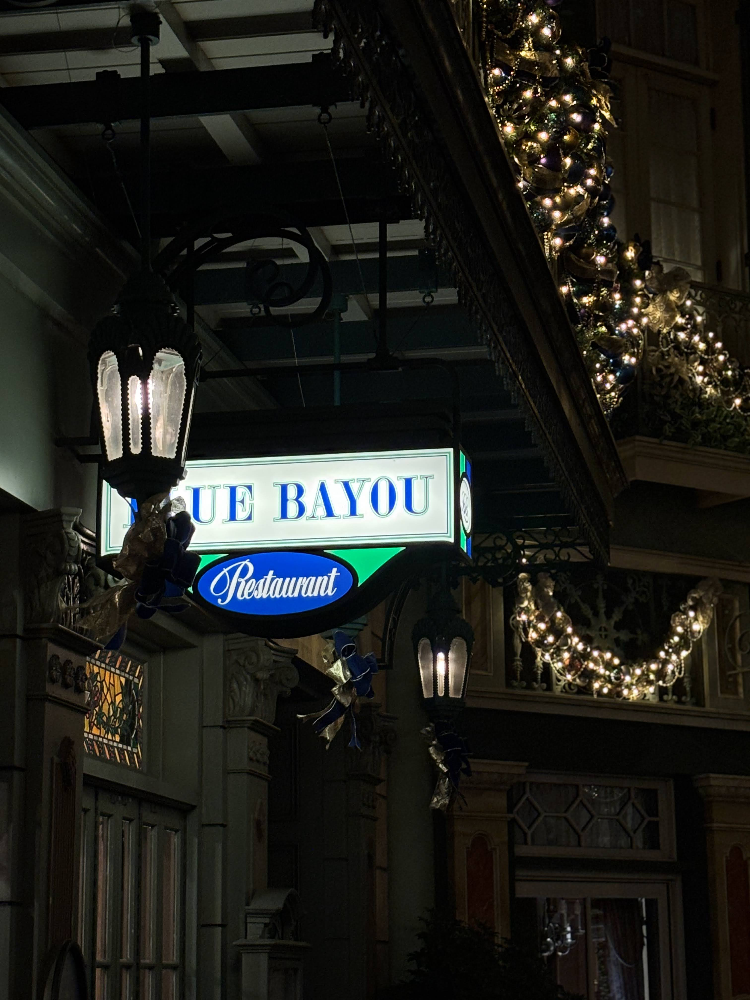

1912年のニューヨーク。人々が「恐怖のホテル（タワー・オブ・テラー）」と呼び畏怖する廃墟、ホテル・ハイタワー。現在はニューヨーク市保存協会による見学ツアーが開催されていますが、その歴史の針は、1899年12月31日の大晦日に起きたオーナー失踪事件の瞬間で止まったままです。
創設者のハリソン・ハイタワー三世は、富と名声、そして尽きることのない収集欲の塊でした。彼は世界中を巡って美術品や文化遺産を半ば「略奪」に近い形で集め、それを誇示するためにこの巨大なホテルを建設したのです。しかしその強欲さは、コンゴ川流域から持ち帰った「ある偶像」の手によって、一瞬にして破滅へと向かうことになります。
この悲劇を引き起こしたのが、ムトゥンドゥ族が崇拝していた精霊の偶像「シリキ・ウトゥンドゥ」です。この偶像には、扱う者が絶対に破ってはならない「8つの掟」が存在しました。
1. 崇拝すること。
2. 燃やさないこと。
3. 閉ざされた場所にしまわないこと。
4. おろそかにしないこと。
5. 馬鹿にしないこと。
6. 他人に渡さないこと。
7. 放置しないこと。
8. 恐れること。
ハイタワー三世は、偶像を木箱に詰めて運び、公の記者会見で呪いを嘲笑し、エレベーター内では吸っていた葉巻の火をその頭に押し付けるなど、あらゆる掟を同時に、かつ徹底的に踏みにじりました。深夜0時、エレベーターを襲った不気味な緑色の雷撃と落下事故。それは偶然の災害ではなく、自然の理を汚した者への容赦なき報いだったのです。
この「ホテルの怪談」を、ディズニーシー全体を貫く壮大な大河ドラマへと引き上げる超重要人物が、ハイタワー三世の執事である**「アーチボルト・スメルディング」**です。
彼は単なる雑務をこなす執事ではなく、20ヶ国語以上を操り、ハイタワーの探検・略奪の全ルートを実質的に支えた「優秀な参謀」でした。ハイタワーへの忠誠心は、もはや「狂信」とも言えるレベルに達しており、ホテルのいたる所に彼の忠誠の痕跡が残されています。
ホテル内の絵画や写真をよく観察すると、スメルディングの姿が何度も描かれています。
・**ロビー正面の絵画：** 右下で熱心に美術品の目録をつける姿。
・**東アフリカ探検の絵画：** 追いかけてくる原住民を切り落とすため、吊り橋のロープをナイフで躊躇なく切ろうとする、彼の「冷酷無比」な一面。
・**エジプト探検の絵画：** 飛び出したミイラに、ハイタワーの後ろでコミカルに驚き慄く姿。
・**ショップ（元ラジャのプール）の写真：** プールサイドで、他の客が楽しむ中、ただ一人「帽子を被った水着姿」で真顔で直立不動している不気味な姿。
驚くべきは、ハイタワー失踪後の彼の動向です。主亡き後、スメルディングもまた行方不明となりましたが、彼は素性を隠してホテルの取り壊しを狙うエンディコット三世に対抗。その娘ベアトリスに偽名で接触し、「ニューヨーク市保存協会」を設立させてこのホテルツアー（アトラクション）を企画させた、いわば**「見学ツアーの真の仕掛け人」**だったのです。彼は今も、主の呪われた遺産を守るため、この廃墟の影に潜んでいます。
ハイタワーの略奪ネットワークは、ニューヨークから遥か遠く、中央アメリカの失われた古代文明の地「ロストリバーデルタ」にまで及んでいました。その動かぬ証拠が、アトラクション**「レイジングスピリッツ」**のQライン（待ち列）周辺に眠っています。
発掘現場の片隅には、無造作に置き去りにされたいくつかの木箱（物資）が残されています。そこには、はっきりと**「HOTEL HIGHTOWER (ホテル・ハイタワー行き)」**とステンシルで印刷されているのです。これは、ハイタワー三世がこの地の神聖な遺跡をも発掘・略奪の対象にしていたことを示す決定的な歴史資料です。
このロストリバーデルタの木箱は、ホテルのロビーにある「ハイタワーが各地を訪れた痕跡を示す壁画」と完全に対をなしています。さらに、近くには「インディ・ジョーンズ博士」が友人マーカス宛てに送った荷物も存在します。
「誰が、どこから、どこへ、何を運ぼうとしたのか」。物が移動した痕跡（荷物）をパーク内に散りばめることで、アメリカンウォーターフロント（1912年）とロストリバーデルタ（1930年代）という、異なるエリアと時代が**「探検と略奪の闇の歴史」**という1本の線で繋がっているのです。
世界中のディズニーパークに存在するタワー・オブ・テラーですが、東京ディズニーシーのものは、**世界で唯一「トワイライト・ゾーン」のライセンスを使用していない、完全なオリジナル作品**です。
アメリカ版（フロリダなど）やパリ版のテーマは、伝説のオカルトTV番組『トワイライト・ゾーン』。1939年の嵐の夜、ハリウッド・タワー・ホテルに落雷があり、エレベーターに乗っていたスターら5人が、そのまま「異次元（トワイライト・ゾーン）」へ消え去ってしまった、という設定です。
しかし、日本への導入時、この米国の番組が若者層に馴染みが薄いと判断したイマジニア（設計者）たちは、ライセンス契約を外し、ディズニーシー全体のテーマである「大航海時代の冒険（S.E.A.）」と深く結びついた「ハイタワー三世とシリキ・ウトゥンドゥの神話」を1から構築しました。
その結果、単なるオカルトホラーを超えた、歴史の整合性とディズニーシーのテーマポート全体を巻き込む、世界で最も緻密で重厚なBGSがこの地に誕生したのです。